INTRODUCTION TO POWER CONVERTER
Introduction
In the dynamic world of electrical engineering, power converters play a pivotal role in shaping the way we harness and distribute electrical energy. These devices, also known as electronic power converters or simply converters, are fundamental components that facilitate the transformation of electrical energy from one form to another. Whether it's altering voltage levels, converting between alternating current (AC) and direct current (DC), or modifying frequency, power converters serve as the linchpin in modern electrical systems. This article delves into the intricacies of power converters, exploring their types, applications, and the underlying principles that drive their functionality.
Understanding the Basics
At its core, a power converter is a device that transforms electrical energy from one form to another. This transformation can involve changes in voltage, current, frequency, or even the modulation of waveforms. The primary objective of power converters is to ensure the efficient and controlled flow of electrical energy, adapting it to the specific requirements of a given application.
Types of Power Converters
Power converters come in a myriad of types, each tailored to meet the unique demands of diverse applications. Here are some of the most common types:
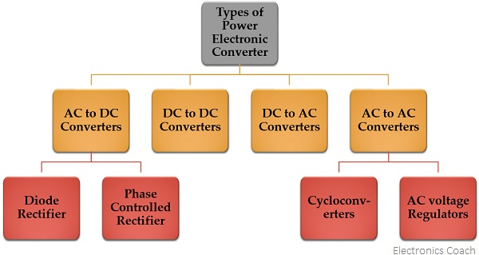
1. AC-DC Converters:
Also known as rectifiers, AC-DC converters transform alternating current (AC) into direct current (DC). This is crucial for powering electronic devices that require a steady DC power supply.
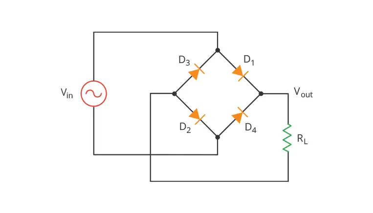
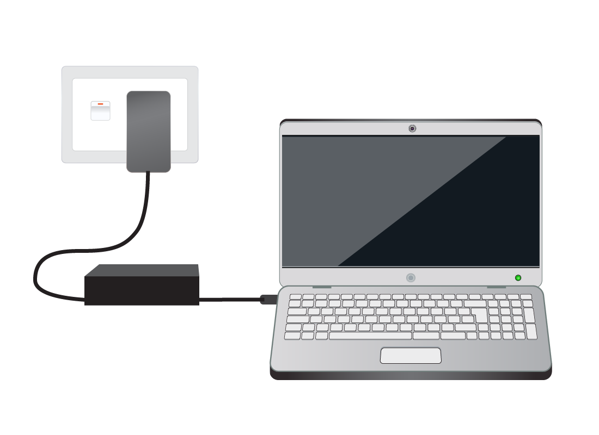
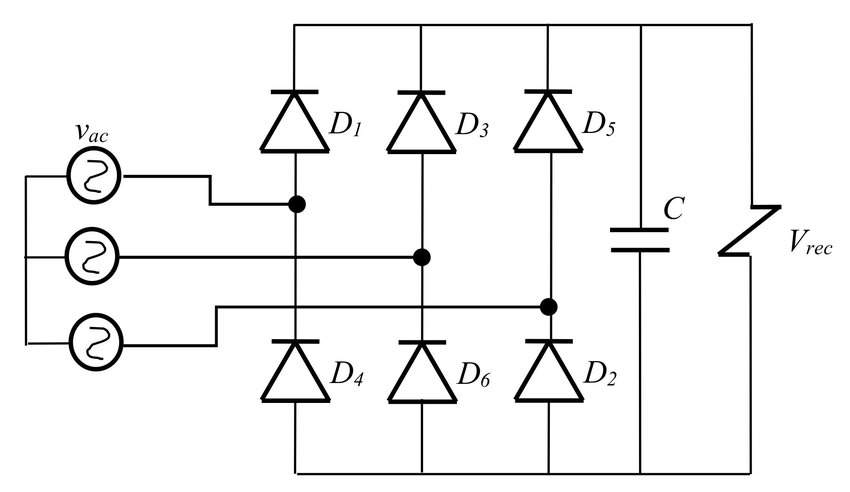
2. DC-AC Converters (Inverters):
Inverters perform the reverse operation of rectifiers, converting DC power into AC power. This is essential for applications like solar inverters, uninterruptible power supplies (UPS), and variable-frequency drives.
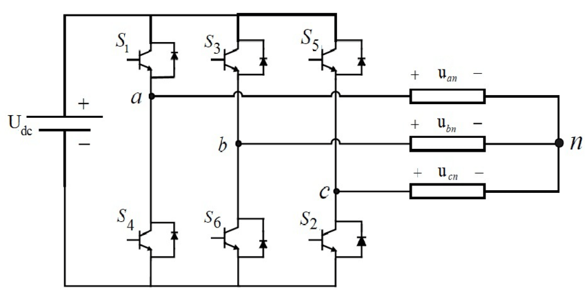
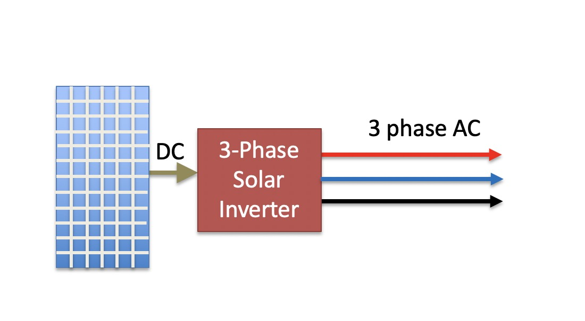
3. AC-AC Converters
These converters modify the characteristics of AC power, such as voltage, frequency, or phase. They are employed in systems requiring precise control over AC parameters, like motor drives and adjustable-speed drives.
Cycloconverters: A cycloconverter is a device used for changing ac supply of fixed voltage and single frequency into an ac output voltage of variable voltage as well as different frequency. However, here the obtained variable ac signal frequency is lower than the frequency of the applied ac input signal. It adopts single-stage conversion. Generally, line commutation is mostly used in cycloconverters however forced or load commutated cycloconverters are also used in various applications. These mainly find applications in slow-speed large AC traction drives such as a rotary kiln, multi MW ac motor drives, etc.
AC Voltage Controllers (AC voltage regulators): The converters designed to change the applied ac signal of fixed voltage into a variable ac voltage signal of the same frequency as that of input. For the operation of these controllers, two thyristors in an antiparallel arrangement are used. Line commutation is used for turning off both the devices. It offers the controlling of the output voltage by changing the firing angle delay. The major applications of ac voltage controllers are in lighting control, electronic tap changers, speed control of large fans and pumps as well.
4. DC-DC Converter
These converters are designed to regulate and modify the voltage level of direct current (DC) power sources. They find extensive use in applications such as battery-powered devices, renewable energy systems, and electric vehicles. There are lots of types of DC-DC converter but we are goint to focus on the Non-Isolated DC-DC Converter and also Bidirectional Converter
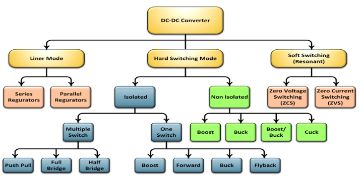
4.1 Boost Converter
The Boost Converter is a non-isolated DC-DC converter that plays a crucial role in stepping up the input voltage to a higher output voltage level. This type of converter is commonly employed in applications where the available input voltage is lower than the required voltage for the load. The basic components of a boost converter include an inductor, a switch, a diode, and a capacitor.
During the switch-on phase, the inductor stores energy from the input source. When the switch is turned off, the energy stored in the inductor is released to the output through the diode, resulting in an increased output voltage. This process allows the boost converter to provide a voltage boost without the need for a transformer.
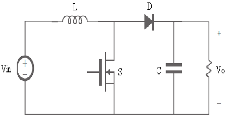
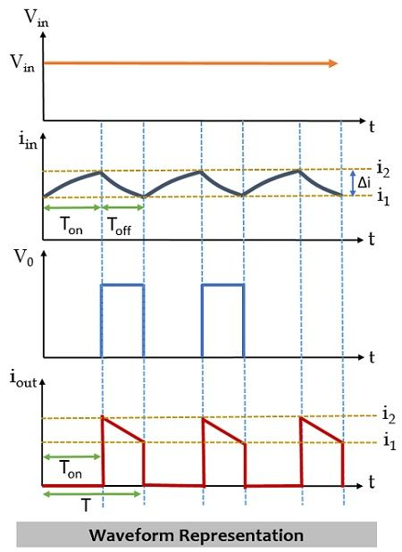
4.2 Buck Converter
The Buck Converter, another non-isolated DC-DC converter, operates by stepping down the input voltage to a lower output voltage. It is widely used in applications where a lower voltage is required for the load, such as battery-powered devices and certain power supplies. The key components include an inductor, a switch, a diode, and a capacitor.
During the switch-on phase, energy is stored in the inductor. When the switch is turned off, the inductor releases the stored energy to the output through the diode, resulting in a reduced output voltage compared to the input. The buck converter is known for its efficiency in voltage reduction without the need for a transformer.
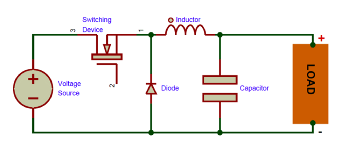
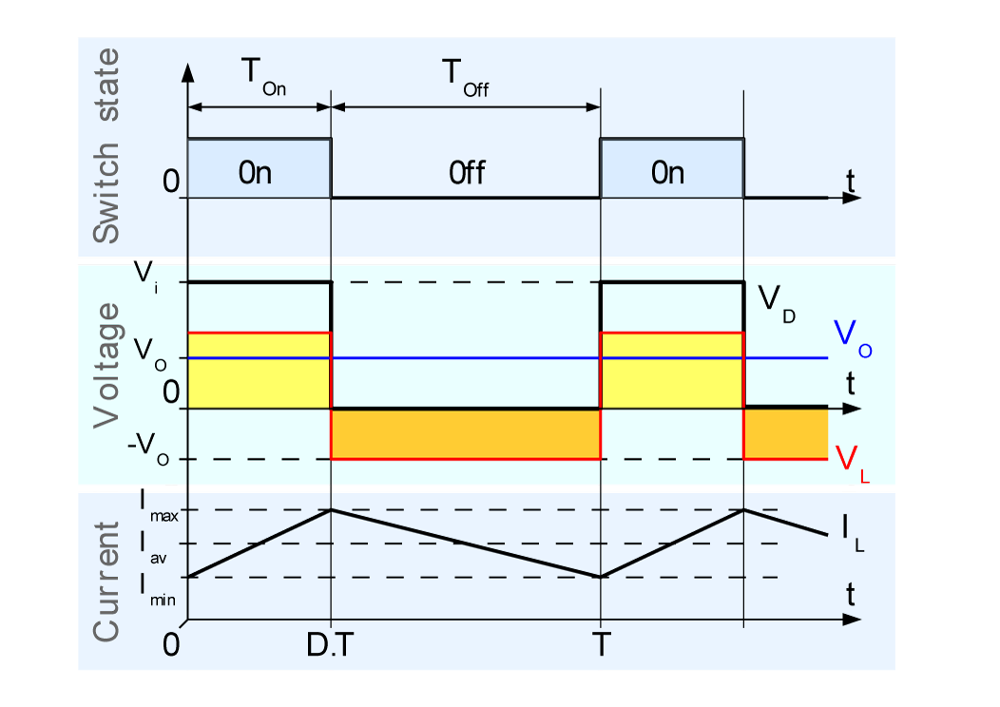
4.3 Buck-Boost Converter
The Buck-Boost Converter is a versatile non-isolated DC-DC converter capable of both stepping up and stepping down the input voltage. This flexibility makes it suitable for applications where the input voltage can vary, and a stable output voltage is required. The components include an inductor, a switch, a diode, and a capacitor.
The energy transfer mechanism in a buck-boost converter allows it to provide either a boosted or reduced output voltage, depending on the operational requirements. This makes it an ideal choice for battery-powered devices and systems where the input voltage fluctuations are common.
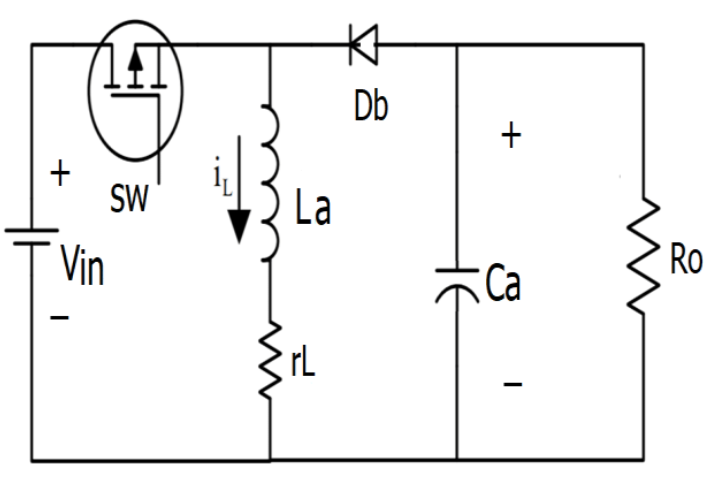
4.4 Cuck Converter
The Ćuk Converter is a non-isolated DC-DC converter designed to provide both step-up and step-down voltage regulation. Its unique topology includes two capacitors, an inductor, and two switches, allowing it to efficiently transfer energy between the input and output. This converter is particularly useful in applications where a non-inverted output voltage is desired.
During different phases of the switching cycle, energy is transferred through the inductor and capacitors, resulting in either an increased or decreased output voltage. The Ćuk converter finds applications in power supplies, battery chargers, and other systems where input and output voltages can vary.
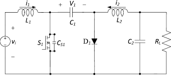
4.5 Bidirectional Converter
Bidirectional Converters are essential in facilitating power flow in both directions, enabling energy transfer between two systems. These converters are integral in applications such as energy storage systems, electric vehicles (Regenerative Breaking), and grid-tied systems, where bidirectional power flow is a necessity.
The bidirectional converter can be implemented using various topologies, such as bidirectional buck-boost or full-bridge configurations. These converters play a crucial role in enabling regenerative braking in electric vehicles, facilitating energy exchange between the grid and renewable energy systems, and managing bidirectional power flow in energy storage systems.
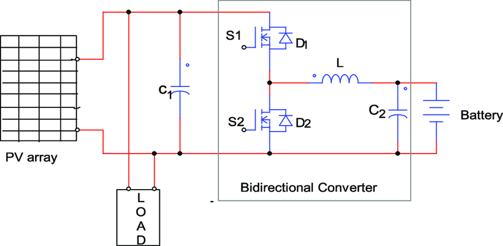
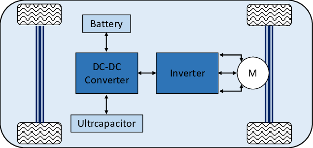
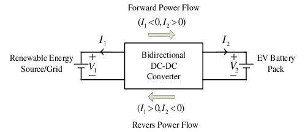